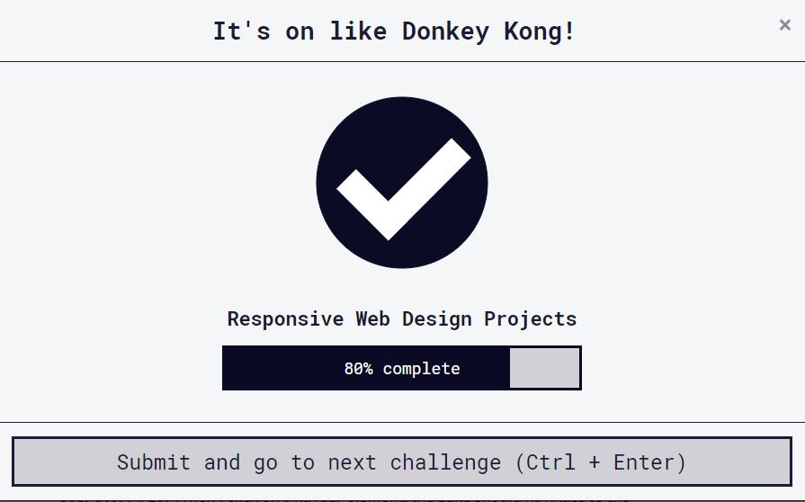
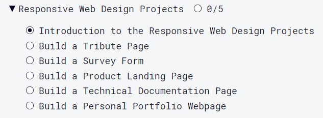
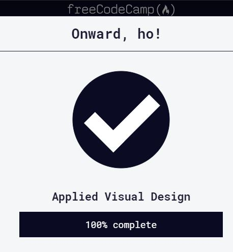
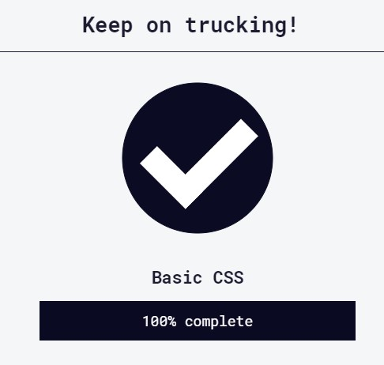
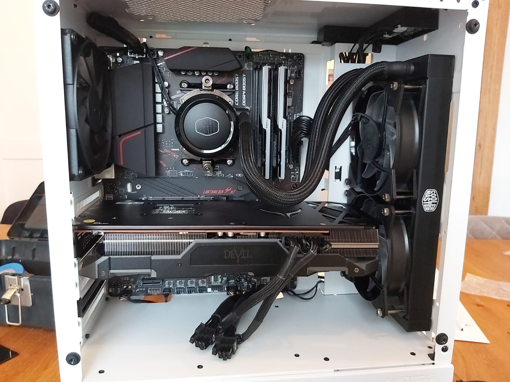

Yes, first software related certification.
"That's one small step for mankind, one giant leap for Bernard" ;)
Verify this certification at: HERE! The aesthetics are horrible for the FreeCodeCamp projects, but the engines work. Next step is use gained knowledge to update my site and I'm going to start with the basics of Javascript.
Next week I have two days of training with a personal trainer, so that gives me plenty of time to let him/her explain the flexboxes again :P
* Continuing with JavaScript Basics.|
History
100DaysOfCode [Version 18.02.2020]
Interwebs:\user\Bernard\day24 and 25>ls
Listing of today... and yesterday:
* Well it's been a few days, and in the meantime I've completed 4 of the projects for the "Responsive Web Design Certification"
 I don't think that it's worth it to link the projects to my site. I've mainly focussed on the technical part, and only the essential aesthetics.
Some other good news, I've gotten greenlight for a "professional" course on HTML and PHP thats going to give me some prove of my skills to potential new employers. Ow, it's a public secret that I'm looking for a new challenge, and my current employer doesn't do anything development related, so it's nice that they help me reskilling.
Another way to "prove" my skills is a "personal portfolio" and, what a coincidence, the last project for the FreeCodeCamp certification is just that.
As for the softskills, this blog shows how motivated I am, what kind of personality I have and a little bit of what problems/challenges I encounter and how I tackle them.
The rest "about me" is for my personal_portfolio/Curriculum vitae/LinkedIn ;)
* Continuing with the last project.
100DaysOfCode [Version 14.02.2020]
Interwebs:\user\Bernard\day23>ls
Listing of today:
* Finished the CSS Flexbox and CSS Grid modules, the only thing left now for the "Responsive Web Design Certification" is the 5 projects:
 I'll make links to the projects on my site next week. But for now I'm signing off for the weekend.
* Continuing with the 5 projects
100DaysOfCode [Version 13.02.2020]
Interwebs:\user\Bernard\day22>ls
Listing of today:
* Completed the Applied Accessibility module;
First time I'm working on a laptop instead of the workstation while studying and updating my site.
Mainly because I don't have to use 2 or an ultrawide screen to search for everything.
I could get used to this "Coding with my girlfriend beside me" thingy. :P
* Continuing with the Responsive Web Design Principles|
100DaysOfCode [Version 12.02.2020]
Interwebs:\user\Bernard\day21>ls
Listing of today:
- After 45 minutes of wrestling with a CSS class that I just couldn't get to work...
I found out the HTML file was refering to my online CSS file....
not the local one that I use for testing before uploading to my ISP...Sigh....
- Toyed around with CSS classes and gradients.
- And with CSS animations.... I'VE GOT A BLINKING CURSOR !!!!!! :D
* Continuing with the Applied Accessibility| <-notice the blinking cursor.... :P
100DaysOfCode [Version 11.02.2020]
Interwebs:\user\Bernard\day20>ls
Listing of today:
* Finished the Applied Visual Design training Freecodecamp.org  Must say, it's getting more fun/challenging now, with the bezier-curves etc.
Now I'm not going to make all kind of CSS animations etc. but it's fun just playing around with it.
* Continuing with the Applied Accessibility;
100DaysOfCode [Version 10.02.2020]
Interwebs:\user\Bernard\day19>ls
Listing of today:
I'm putting all my sparetime in HTML, CSS and PHP online guides/courses/etc in preperation for the "real life courses". If I'm comfortable with all the basic stuff, I can get the most out of the time I have with the personal instructor.
During these online courses I've made a habit of trying everything out on my own site, It's my "iteration sandbox" :P
- Finished the CSS basic knowledge test;
 - Starting the Applied Visual Design;
100DaysOfCode [Version 06.02.2020]
Interwebs:\user\Bernard\day18>ls
Listing of today:
- (edit)Started the CSS basics knowledge test on Freecodecamp.org - cleaned/streamlined my stylesheet by using id's and CSS classes
- Few hours later my cooler arrived, some pics:

Good evening!
100DaysOfCode [Version 05.02.2020]
Interwebs:\user\Bernard\day17>ls
Listing of today:
- Yeah, made my first iframe, I only made it for the statusbar, so I only have to update it in that specific file;
- Tried to put the banner etc. in an iFrame, but had "issues" with scaling;
- New banner, please send feedback for styling tips :P
- Had some "new pc issues" which I had to sort out, memory wasn't running at the right timing, and I need a better cooler than the stock AMD cooler.
- Ordered a better cooler.
Good evening!
100DaysOfCode [Version 04.02.2020]
Interwebs:\user\Bernard\day16>ls
Listing of today:
- Uhm... fixed the post from yesterday... it wasn't the 2nd but the 3th of februari;
- Added a timecode on the Form's page;
- Did a HTML knowledge check on freecodecamp.org, just to see if I "get it now" and if I have blind spots left(I know always...);
- On with PHP
Good evening!
100DaysOfCode [Version 03.02.2020]
Interwebs:\user\Bernard\day15>ls
Listing of today:
- Changed the paragraph piece of my HTML page to pre-formatted text;
- The courier font is on purpose Joop :P
- Played around with the forms page;
- made a php script that catches the entered data of the form page and validates and "secures" the data;
- learned a lot about code exploits, and especially trying to prevent them;
- So a couple of hours after the above I finally got "something" working.
=> You can enter your name and a message on the Form page
=> A php script processes the data and logs it in a text file
=> Next time the Forms page is refreshed your message has been added to the bottom of the page.
It's something :D
- more tomorrow, good night :D
100DaysOfCode [Version 30.01.2020]
Interwebs:\user\Bernard\day14>ls
Listing of today:
- Done a lot, I've removed a lot of borrowd CSS and I am now making my own navigation bar.
Maybe it's not perfect, but I like the fact that I made it myself :D
- Also did my Form page from scratch. It's good to see that, with a stylesheet, it's only a couple of lines of code to make a page :D
- More very important news: My hoodie arrived, and guess what.... I'm gonna share a picture with you :P
I have asked for my bonus-daughter to take a picture, but she can't stop laughing ... 46 year old.... hoodie.... whahahaha... sigh.. Anywho, I love retro hardware so I'm actually gonna wear this one :D Full disclosure ... the earbuds are not connected... I use a headset... But it's time to dress for succes :P
Tomorrow: PHP Forms
100DaysOfCode [Version 29.01.2020]
Interwebs:\user\Bernard\day12 and 13..>ls
Listing of today aaaand yesterday:
- Had some private things to take care of and spend my freetime on coding and learning instead of social media :D
- The most visible yet invisible thing I've done is to move my styling to an external CSS file.
- I've noticed that I'm trying to run when I should be walking with code... nice title for my first book...
- Gaining new knowledge is very cool, and I'm very eager use it all, but I notice I need to look up a lot...
I think that's the problem with courses on Udemy or Plurasight, you mis a lot of background info.
Now I've taken 2 steps to ... how shall I put this... "consolidate what I learn?"
1- I'm re-scanning some parts of the courses I've done, but this time I combine the points they are adressing with other sources of information:
For instance: In the Pluralsight HTML training, when they adress "links", I pause the video and read the "HTML Links" chapter on W3 schools. LINK 2- I've gotten permission of my employer to attend 2 courses on HTML/CSS and PHP.
The first one is a 2 day training with personal guidance where I can get answers to all questions I might have on HTML and CSS.
The second one is a 3 day class on the basics of PHP.
100DaysOfCode [Version 27.01.2020]
Interwebs:\user\Bernard\day11>ls
Listing of today:
- Finally after testing on another machine and removing some software and re-installing XAMPP etc. I have a working local version of my SQL database and a working connect PHP script.
- I just test my PHP scripts from the CLI now. I'm leaving the trouble I'm having with Visual Studio Code for what they are for the moment. It's almost time for me to order a new PC so it's not worth my time to re-install my machine anymore. And I'm NOT having the same problems on our laptop so...
I Have created a database for recording a message from users. Next step is implementing it in the local test website and then transferring it to my ISP.
Thats a nice & doable goal for this week I think.
- Got to experiment a lot with PHPmyAdmin, importing and exporting databases, etc. this weekend. It's nice to gain some XP with these things.
Of course this all took way more time than one hour a day this weekend, and the rest of the weekend I've spend on my family and friends.
And since it's not pure coding I've stopped counting for the 100DayOfCode challenge. There are just not enough hours in a day....
And a new week, fresh start etc. :D
100DaysOfCode [Version 24.01.2020]
Interwebs:\user\Bernard\day10>ls
Listing of today:
- Created a new database on my local version of MySQL;
- Typed a PHP connection script in Visual Studio Code;
- ..... uh can't run or debug.....
- "Ow right, need to install the extensions, DUH."
- Installed extensions, pressed F1 and TRIED to enter "ext install php-debug"
- Does nothing.
- Wanting to keep my focus on the code, I reinstalled Netbeans, configure my PHP.exe,
run my script and.... ARGH "Missing input file" ? What?
- etc.. etc... you know how these things go.
- All in all It's 2 hours later now and I still didn't get it working. And I try to tell myself that It's normal, new skills means new tools, etc.
But I'm also human, and it uh s#cks(pardon my french) when this happens when you're enthusiastically combining 2 new things you've learned.
Learning HTML/CSS/PHP etc is just one piece of the new puzzle.
I'm lucky that I work with servers(I'm a hardware engineer professionally), Unity, and arduino's & raspberries(Hobby),
so I am no stranger to IDE's, scripts, CLI, array's, filesystem, basic knowledge on databases, etc.
And with the help of some guides/tutorials/courses and Google. I pick up what I need to know reasonably fast and I know I'll figure it out eventually. I've learned a lot on software development in 2 weeks already.
* Guess that I'm trying to say that I have respect for the people that are reskilling from non-IT related jobs!!!*
Anyway, for today it's been enough, back to my private life.
100DaysOfCode [Version 23.01.2020]
Interwebs:\user\Bernard\day9>ls
Listing of today:
- Figured out that you can't use grouping elements in a paragraph.... so no list in a paragraph... to bad.
- Experimented with forms, but no link to PHP/MySQL yet
- Fixed a lot of formatting issues
- Removed a lot of "code leftovers"
- Decided to stop using a lot of "a lot"
- discovered how usefull the "inspect" option is in Chrome
- Just enjoyed myself :D
For tomorrow I'm planning to set up a MySQL database and connect it to the form so I can store the data.
Hmmm, I might need to re-visit the PHP course for that... That's the problem with new knowledge, you need to keep adressing it to store it in your own memorybanks :P
Am I that different from a harddrive?.... whoo almost got distracted by a philosophical path....
100DaysOfCode [Version 22.01.2020]
Day 8:\user\Bernard>ListDay.exe /p
Listing of today: Nieuwe dag, nieuwe uitdagingen...
Ik wil nu iig voor de tekst formatting alleen nog maar gebruik maken van HTML/CSS.
Dit zodat ik gewoon door kan typen wat ik wil.
En dit zonder opmaak in de tekst zelf dus, zodat alles netjes vanzelf in het juiste format etc. afgebeeld wordt.
Ow wait, this is suppost to be in english.. Well I was just rambling about the fact that I want to use CSS for all
of the text formatting. For cleaner coding :)_
And placed the banner my daugher made.
Day 7/100:
Whoohoo, first week :P
Just following along the course and some tutorials... again...
played around with linking documents and making tables in HTML.
Used stylesheet to format the table.
Ow yeah figured out how to wrap text, so here it is again: it's "honest work".
Ow... not realy working... lol.... back to the drawingboard tomorrow.. can't win them all in one go :D
No major update to the site, just some fixes. Made the tables in a seperate HTML doc.
“The master has failed more times than the beginner has even tried.” Stephen McCarnie
Day 6/100:
New week, freshly motivated :D
Just following along the course and some tutorials.
Figured out how to add an image and how to make it scale to the size of the window.
And yeah it's ugly, but it's "honest work". I'll let one of my daughters draw some awesome original art.
And It's clear I need to figure out how to wrap text around an image.
Day 5/100:
Had problems with centering text. p {text-align: center;} Worked for the first paragraph but only for the first...
Ow... fixed it :P, forgot to define each day as a paragraph, the second paragraph was almost the
complete page.. Got to step up my clean code....
I'm gonne leave day 1 to 4 "as is" for reference(until I figured out how to put it al in a database)
Last time I did something with HTML was like 14 years ago, CSS replaced a lot of the HTML code.
Visited one of my friends yesterday, and he helped me with some code related questions I had.
Public thanks for that Joop :D
Day 4/100:
Interrupted the HTML Fundamentals training to give priority to GIT training
I've used GitHub before but I need to understand it better and being able to
restore a previous version..... Let's say that some of us need to learn the
hard way....
Day 3/100:
Started the "HTML fundamentals" training on Pluralsight.com
Added the progress bar
Hmmm... maybe I can eventually add the tweets to this page or record
my progress log in a database or something :P
Ow and I discovered Bootstrap and wasted a couple of minutes :D
Day 2/100:
Nothing to special yet:
- selected a web hosting company (which took more time than expected)
- registered 038coder.nl
- used Visual Studio for HTML for the first time LoL.
- uploaded this HTML document to the server... Impressive huh ?!
Day 1/100:
Decided my course: from HTML,CSS&JavaScript to (OOP) PHP and finishing with Laravel.
Preparing my workstation by (re-)installing LAMP stack etc.
And hereby committing to #100DaysOfCode !!


 played around with linking documents and making tables in HTML.
played around with linking documents and making tables in HTML.
{kind=link}
{kind=link}
{kind=link}
{kind=link}
{kind=link}